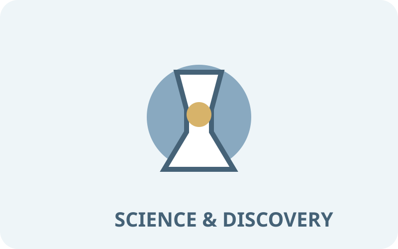
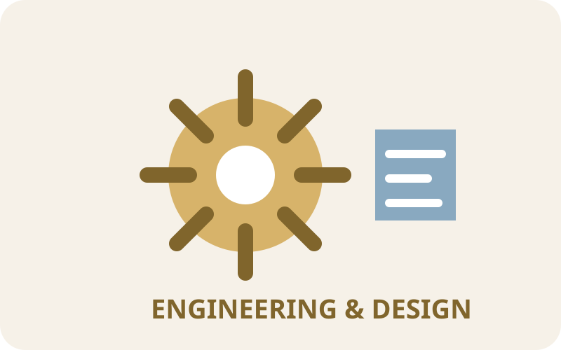
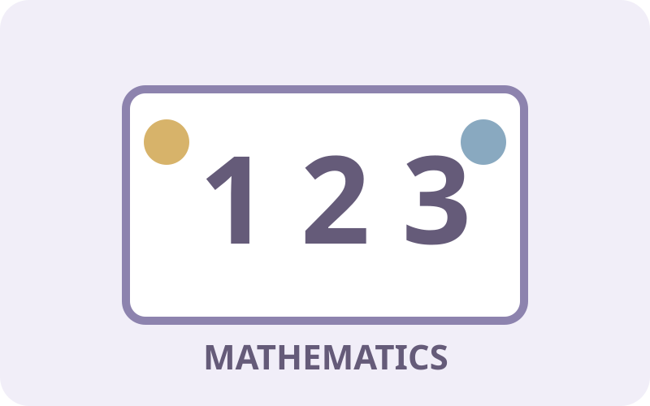
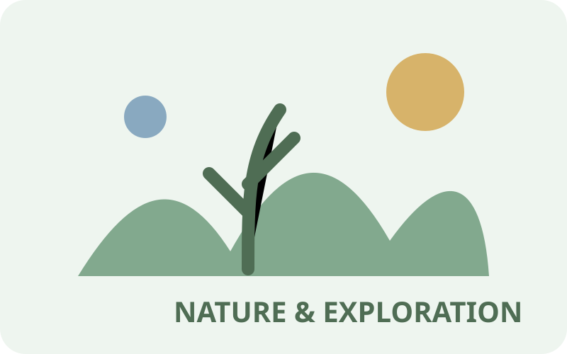

🔬 Science & Discovery
Encourage observation, questioning, investigation, prediction, experimentation, and evidence based thinking.
Explore Science →Explore hands-on STEM experiences that encourage children to ask questions, investigate, build, measure, predict, test ideas, solve problems, and discover how the world works.
Choose a collection for practical classroom ideas, investigation prompts, planning connections, and developmentally appropriate experiences.

Encourage observation, questioning, investigation, prediction, experimentation, and evidence based thinking.
Explore Science →
Support children as they design, build, test, revise, and solve problems with materials and structures.
Explore Engineering →
Build counting, quantity, patterns, measurement, shapes, spatial reasoning, comparison, and mathematical thinking.
Explore Mathematics →Use age appropriate tools and technology to support investigation, communication, documentation, creativity, and problem solving.
Explore Technology →
Turn outdoor experiences, living things, weather, materials, and children's questions into meaningful investigations.
Explore Nature →Use play, routines, interest areas, outdoor exploration, stories, materials, and children's questions as opportunities for STEM learning.
Notice children's questions, strategies, predictions, discoveries, designs, and problem solving.
Assessment Center →Turn children's interests into intentional hands-on STEM experiences.
Lesson Plan Library →